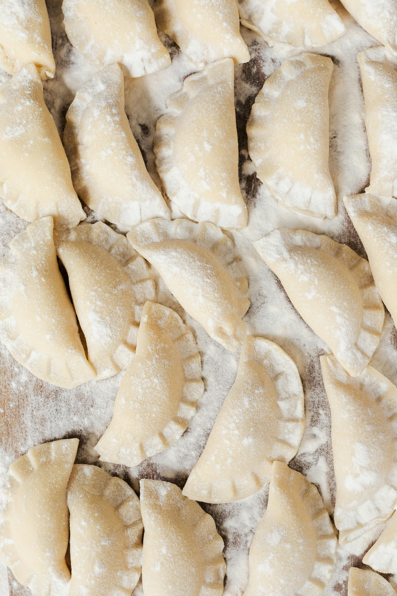

Home
Pierogies Recipe

Description
I had these unforgettable pierogies on vacation and knew I had to try to recreate them at home.
This is an easy and quick shortcut method using frozen pierogies. It's a stylish appetizer for
a dinner party or for a fun gathering of friends.
Ingrediants
Carmelized Onions
- 2 sweet onions
- 2 tablespoons avocado oil or canola oil
Pierogies
- 1 (16 ounce) package frozen cheese and potato pierogies
- 2 tablespoons unsalted butter
- 1 tablespoon avocado oil or canola oil
- salt and freshly ground black pepper to taste
Steps
- Trim the ends of the onions, cut in half lengthwise, and peel. Thinly slice the halves vertically from top to bottom.
- Heat oil in a large skillet over medium heat. Add onions to skillet, tossing until well coated. Stir until they start to soften,
then reduce heat to medium-low. Cook until onions start to brown, 15 to 20 minutes, stirring frequently. If they start to stick
to the skillet, add a little water.
- Meanwhile, heat butter and oil in a large nonstick skillet over medium heat, add pierogies in a single layer, and cook for about
16 minutes or according to package directions, flipping halfway through. Season with salt and pepper.
- Transfer pierogies to a serving plate. Add a dollop of sour cream to each pierogi, top with caramelized onions and crumbled bacon.
Sprinkle with Parmesan cheese and parsley, and serve with lemon wedges.